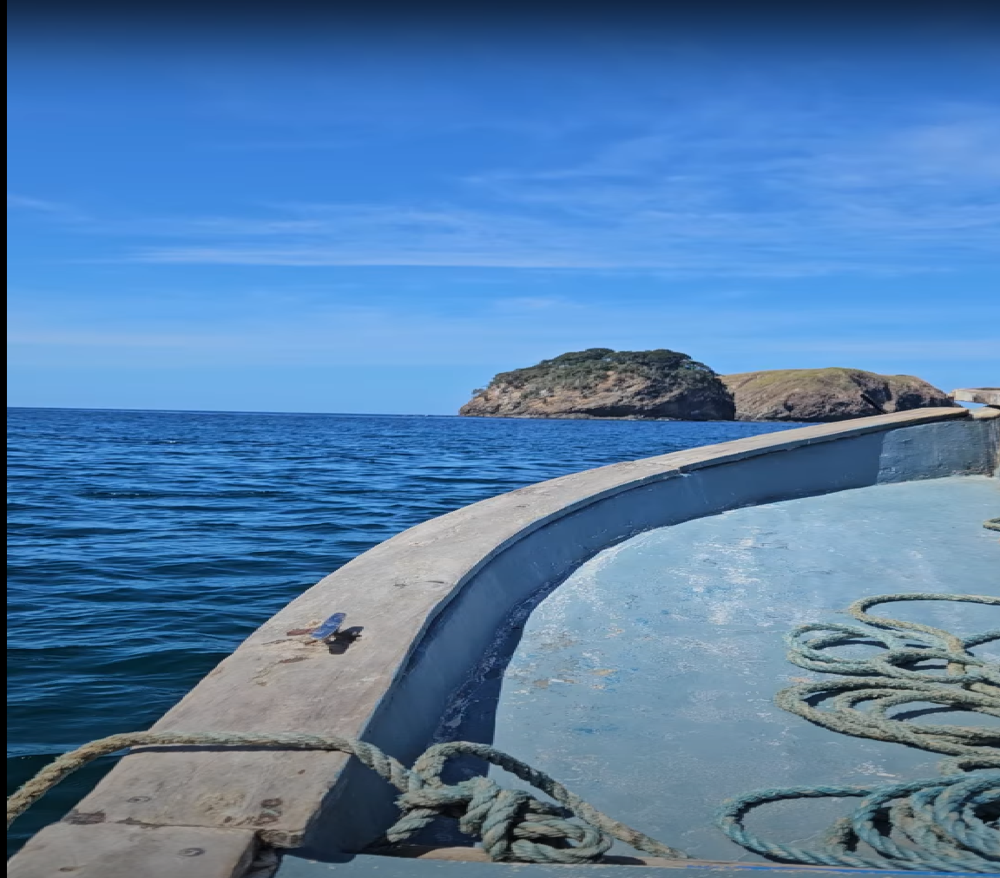

La Playa de los Locales
Ubicación
Playa Calzón de Pobre se encuentra en la Península de Nicoya, provincia de Guanacaste, Costa Rica.
Distancia desde San José: aproximadamente 200 km (4 horas en auto).
Acceso: Se llega por caminos rurales y requiere 4x4 en época lluviosa.
Clima: Tropical seco con temperaturas entre 25°C y 35°C.
Mejor época para visitar: Diciembre a Abril (temporada seca).
Características
- Arena blanca y suave de más de 1 km de extensión
- Agua turquesa y cristalina ideal para nadar
- Oleaje moderado, perfecto para bodysurf
- Rodeada de acantilados rocosos con formaciones únicas
- Palmeras que proporcionan sombra natural
- Puesta de sol espectacular sobre el Pacífico
- Zona protegida con manglares en los extremos
Actividades
- Natación en aguas cálidas y tranquilas
- Snorkeling para observar la vida marina
- Surf para principiantes en temporada
- Caminatas por la playa al atardecer
- Observación de aves marinas
- Picnics en la arena bajo las palmeras
- Fotografía de paisajes y puestas de sol
- Exploración de las formaciones rocosas
Galería de Imágenes


